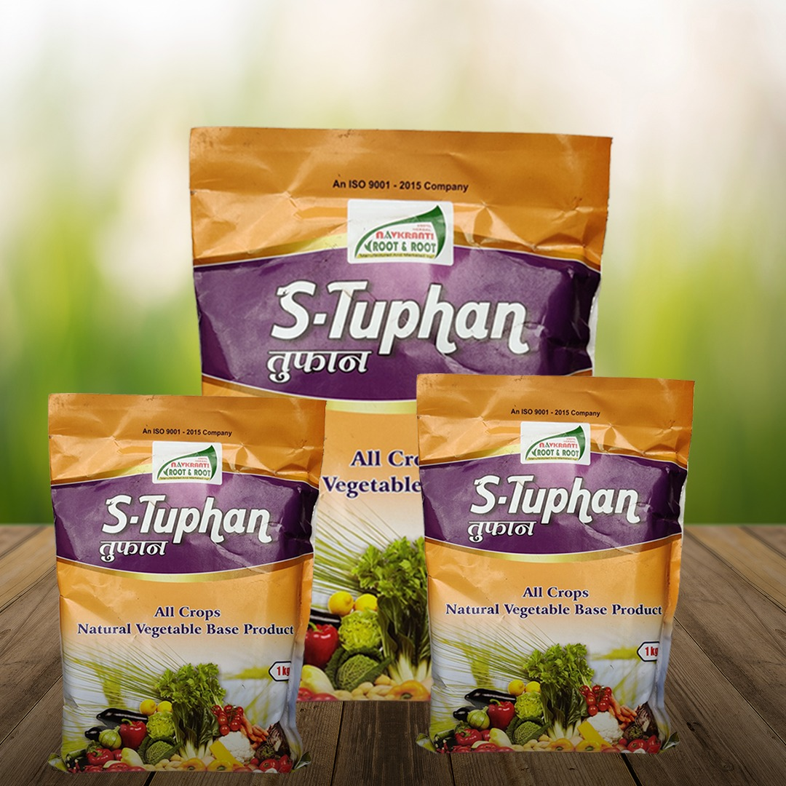
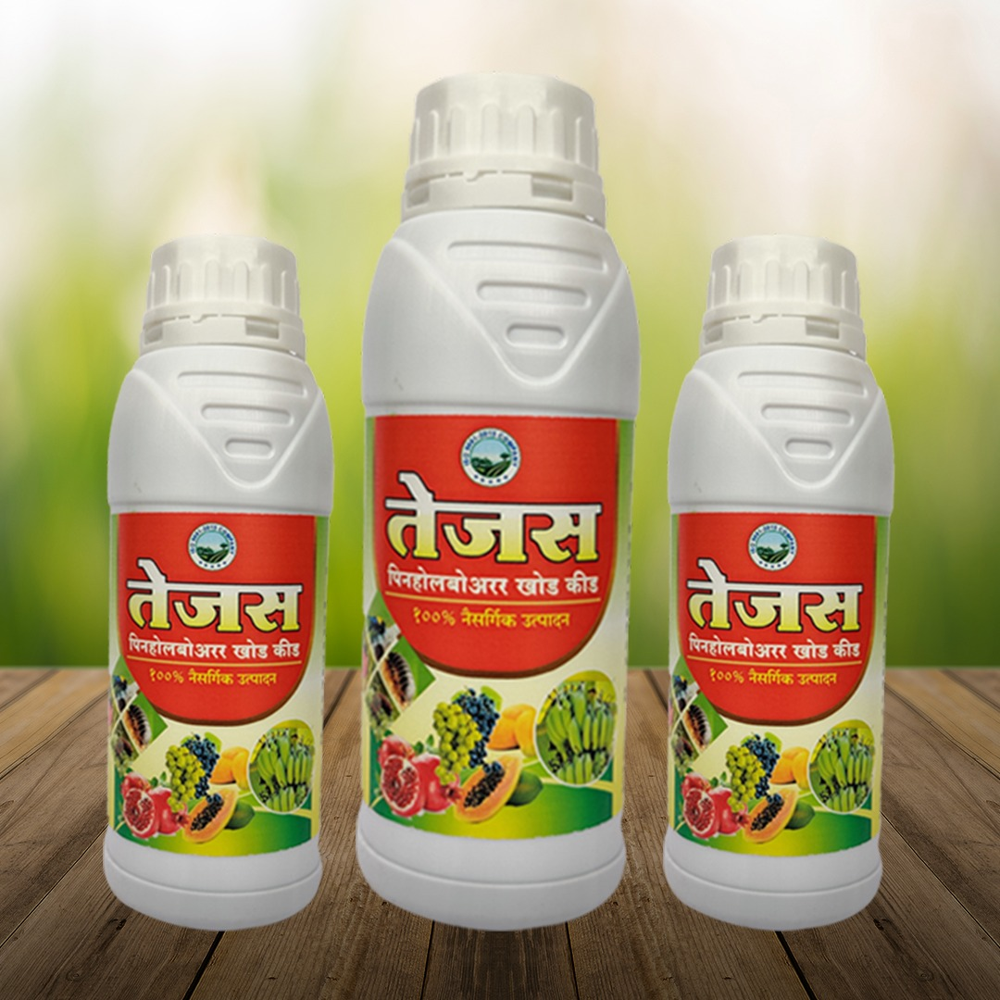
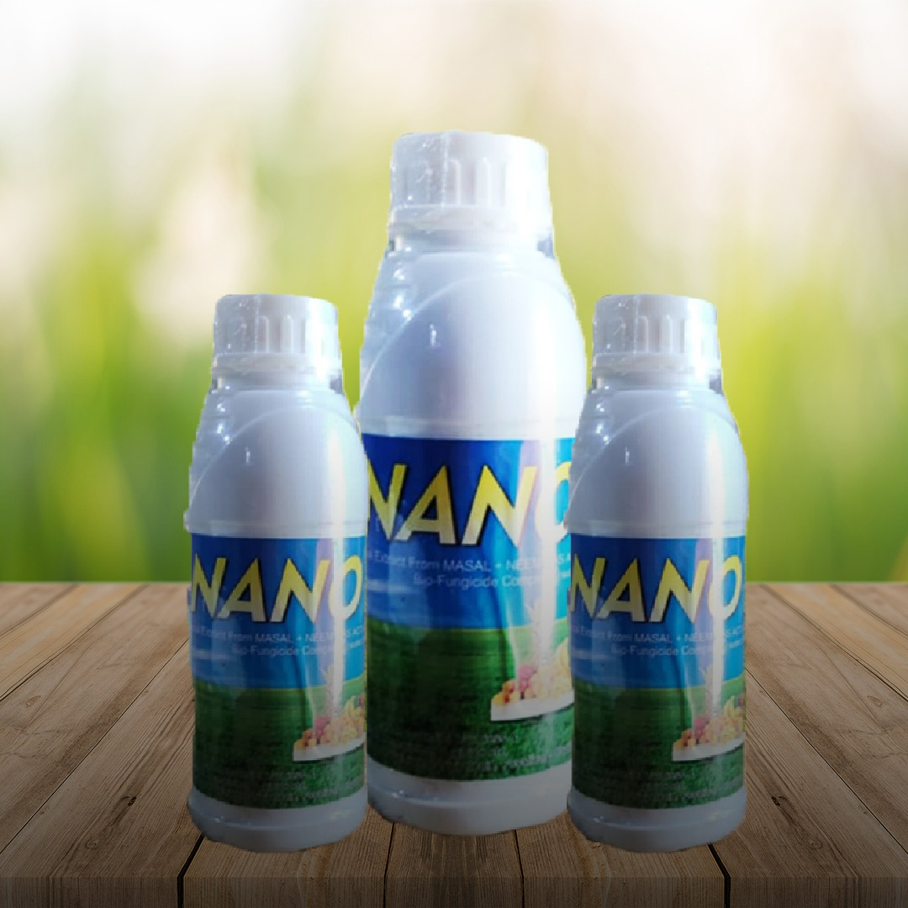
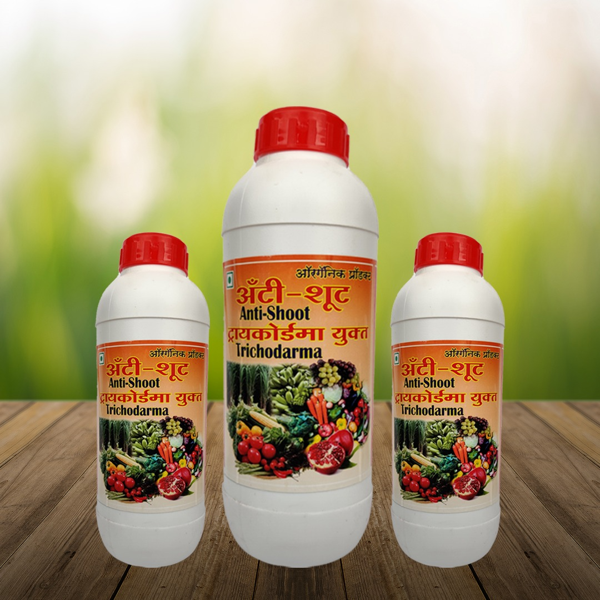
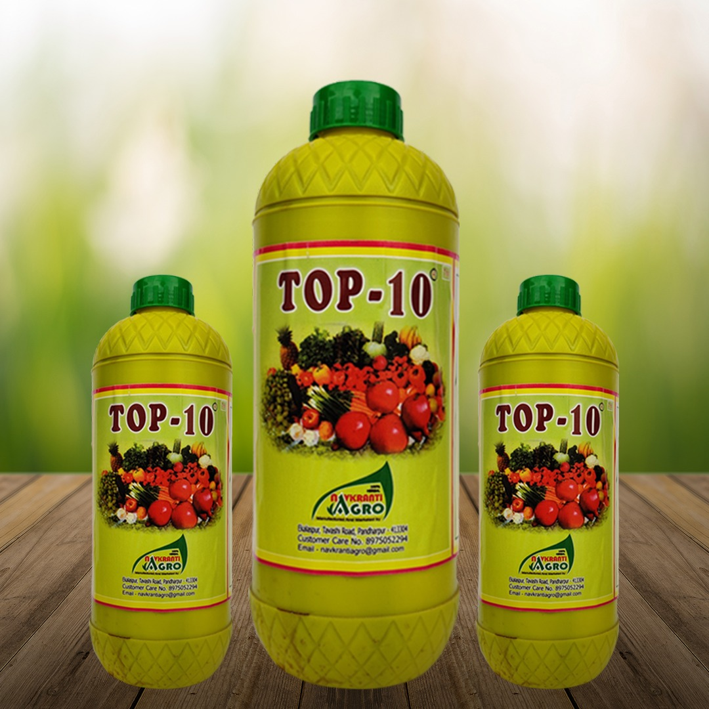

तेल्या रामबाण (जैविक)
1.तेल्या रोगासाठी उत्तम औषध तेल्या हा रोग आपल्या पिकांवर
येऊ नये आणि आलेला असला तरी सुद्धा हे जैविक उत्तम काम
करते. 100% हर्बल, आणि हजारो शेतकऱ्यांनी प्रतक्ष्य अनुभव
घेतला आहे . 2.थ्रीप्स, व्हायरस, लालकोळी व लहान आळीसाठी
उपयुक्त 3.पानावरील तेल्या घालवतो 4. गोमूत्र आणि
मासाल्याच्या पदार्थापासून तयार होते. 5.कोणताही साईड
इफेक्ट नाही 7. एक लिटर साठी ५ मिली 8. १५ दिवसांनी एक
फवारणी करावी.

तुफान
तुफान पावडर हे सेंद्रिय उत्पादन असून नऊ प्रकारचे घटक
यामध्ये आहेत. फुलविक, अॅमिनो, नत्र, स्फुरद, पॉलाश, जस्त,
लोह व इतर घटक आहेत. तुफान मुळे झाडांची, पिकांची
भाजीपालांची वाढ होते. फुले, कळी, उंचीत वाढ होते. कळीचा
आकार मोठा होतो सर्व पिकाला चालते.

तेजस
तेजसच्या वापरामुळे खोडातील बोअरर बाहेर येवून मरतो. तेजस
हे जमिनीतील वाळवी, हुमणी व सुत्रकृमी यावर प्रतिबंधात्मक
म्हणून काम करते. झाडाच्या खोडावर चिकटून राहण्याच्या
गुणधर्मामुळे पावसाळ्यातही उपयुक्त. किटकांच्या श्वसन, पचन
आणि प्रजनन संस्थेवर विपरीत परिणाम करते. उत्कृष्ट
प्रतिबंधात्मक/ उपचारात्मक गुणधर्म प्रमाण २.५ मिली/लिटर
पाणी फवारणीसाठी ०.५ ते १ लिटर ड्रिचिंगसाठी उपलब्ध पॅकींग
:- २५० मिली, ५०० मिली, १ लिटर

निओफाईट
झाडांच्या मूळावरील गाठीसाठी किंवा निमोटेटसाठी हे औषध
प्रभावी आहे. फायदे : औषधाच्या वापरामुळे निमोटेड कमी
होवून उत्पादनात वाढ होते. निमोटेडसाठी उपयुक्त औषध प्रमाण
: ३०० झाडाला १/२ लिटर

नॅनो जान
व्हायरस साठी उत्तम,अळी ,लाल कोळी ,मिलिबाग ,पपई ,वांगी ,
डाळिंब, मिरची व फळझाडे भाजीपाला साठी उत्तम..

आर.के.परफेक्ट
करपा, भुरी, मर, डाऊनी, मूळकुंज फळकुज इत्यादी रोगापासून
होणारे नुकसान टळते .

अॅन्टीशुट
हे औषध नैसर्गिक असून ट्रायकोड्रामायुक्त असल्यामुळे जास्त
फायद्याचे. ३०० झाडाला १ लिटर अॅन्टीशुट + २ किलो गुळात २४
तास भिजवून २०० लिटर पाण्यात सोडणे. फायदे : मर रोगासाठी
उत्तम. प्रमाण :- ३०० झाडाला १ लिटर

टॉप गोल्ड
१) पांढरी मुळीची वाढ होते. २) निमोटेड साठी (मुळावरील
गाठी) उपयुक्त ३) फळाची साईज वाढते. ४) झाडाची उत्तम वाढ
होते. ५) फळाचे वजन वाढते. ६) १००% हर्बल, साईड इफेक्ट
नाही. ७) सर्व पिकांना उपयुक्त ८) एकरी ५ लिटर (दोन वेळा,
२,१/२ लिटर सोडणे. ९) नत्र, स्फुरद, पॉलीश, मॅग्नेशियम
लोह, जस्त्र, कॅलशीयम, अॅमिनो ॲसिड व इतर घटक आहेत.
डाळींब, द्राक्षी, ऊस, मका व सर्व फळ झाडासाठी, भाजीपाला
वाढीसाठी १००% उपयुक्त.

बायो के
हे औषध नैसर्गिक पोटॅश पिकाला आपटेक करुन देते. ह्यामुळे
फळाला रंग व वजन वाढते चमकही वाढते. प्रमाण : ३०० झाडाला १
लिटर.

बायो १००
बायो १०० हे फवारणी व खालून सोडण्यासाठी चालते. हे जैविक व
सेंद्रिय टॉनिक असून झाडांची वाढ होते. ॲमिनो, फुलविक, एल
सायकिन, नापका, फोलिक अॅसिड व इतर घटक आहे सर्वात उत्तम
टॉनिक आहे.

रूट पावडर
रुट पावडर हे ९८% पोटॅशियम ह्युमेट आहे हे एक्सपोर्ट
इपोस्टेड आहे. झाडांची मुळी वाढते. पांढऱ्या मूळांची वाढ
जलद होते. झाडावर काळोखी येते. १००% वॉटर सोल्यूबल आहे.

आर के अन्नदाता
हे औषध नैसर्गिक आणि इतर घटकापासून बनविले आहे. ह्यामध्ये
नत्र, स्फुरद, पॉलाश, मॅग्नेशियम, लोह, जस्त, कॅलशियम,
अमिनो ॲसिड व इतर घटक आहेत. डाळींब, द्राक्षे, ऊस, मका,
कांदा, गहू, सर्व प्रकारच्या फळबाग भाजीपाला, पिकाच्या
वाढीसाठी १००% उपयुक्त फायदे : पांढरीमुळीची वाढ होते.
फळांची वजन वाढते. १००% हर्बल फुलगळ, फळगळ कमी होते. सर्व
पिकांसाठी उपयुक्त.

लाईफ केअर
लाईफ केअर औषधामध्ये फुलविक, अमिनो इतर पाच ते सहा
नैसर्गिक घटक आहेत. फायदे : नवीन कळी येते. फुलगळ झालेल्या
बागेसाठी उत्तम प्रमाण ५ मीली.

ऑल राऊंडर
हे औषध जैविक असून फळ पोखरणारी अळी मिलीबग, थ्रिप्स,
लालकोळी, कीटक इत्यादी सर्व रोगांवर काम करते. प्रमाण : १
मिली/लिटर.

टॉप १०
१) कळी काढण्यासाठी उत्तम २) झाडाची वाढ होते. ३) फळाची
वाढ होते. ४) फळांचे वजन वाढते. ५) कोणत्याही पिकांसाठी
उत्तम ६) फवारणीसाठी व खालून सोडविण्यासाठी उत्तम ७) फोलिक
अॅसिड एल सायकीन, अॅमीनो अॅसीड, फुलविक अॅसिड, पोटॅशियम
नायट्रेड युक्त ८) डाळींब, द्राक्षे, कांदा, वांगी, मिरची,
सर्व कडधान्ये भाजीपाला व इतर सर्व पिकासाठी उपयुक्त ९)
प्रमाण एकरी एक लिटर किंवा २ मिली, १ लिटर पाणी
फवारणीसाठी.